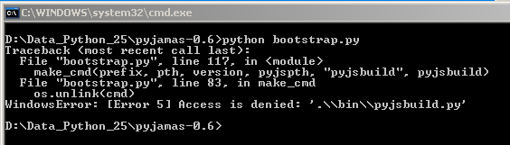
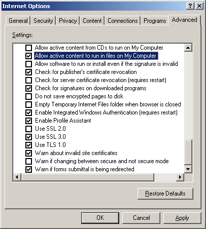
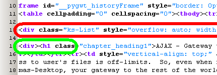

Brick PyJamas  ( march 2009 )
( march 2009 )
Application Designer / Domain Expert / Control Designer / Core Developer
Introduction
Having huge troubles getting V 0.5 working, I decided to stick to 0.4p1 for the moment.
Today (august 2009) I decided to try the latest version again.
Because I copied the pyjamas directory from another PC, pyjsbuild.py was set Readonly, resulting in the following errror

Running the example Hello.py
Problems
Modifications of PyJamas
P:\Python\Lib\site-packages\pyjd\imputil.py _import_top_module in
P:/Python/Lib/imputil.py
def _import_top_module(self, name):
# scan sys.path looking for a location in the filesystem that contains
# the module, or an Importer object that can import the module.
for item in sys.path:
if isinstance(item, _StringType):
module = self.fs_imp.import_from_dir(item, name)
elif isinstance ( item, basestring ) : ## <== ADDED
module = self.fs_imp.import_from_dir ( str(item), name) ## <== ADDED
else:
module = item.import_top(name)
if module:
return module
return None
IE desktop unblocking

Javascript debugging
Mozilla
with switch "-venkman"
http://www.mozilla.org/projects/venkman/venkman-walkthrough.html
IE7
Printing the Book
